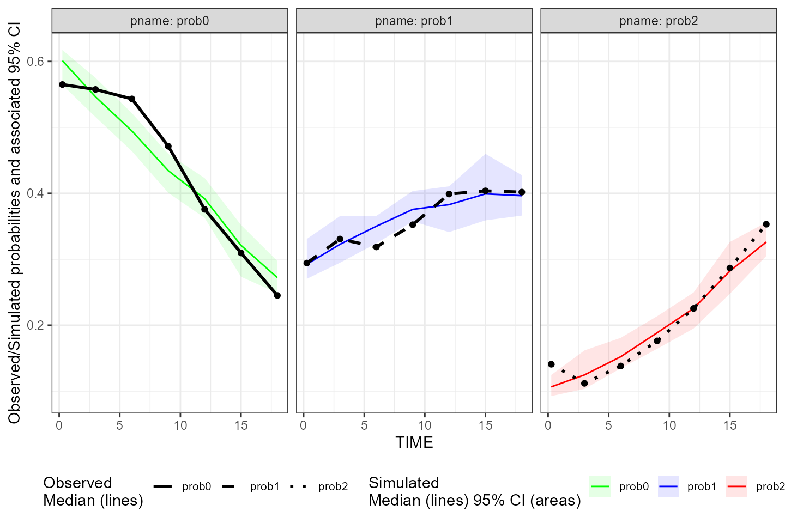
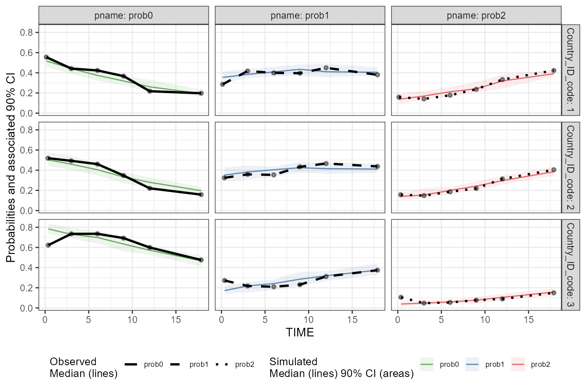
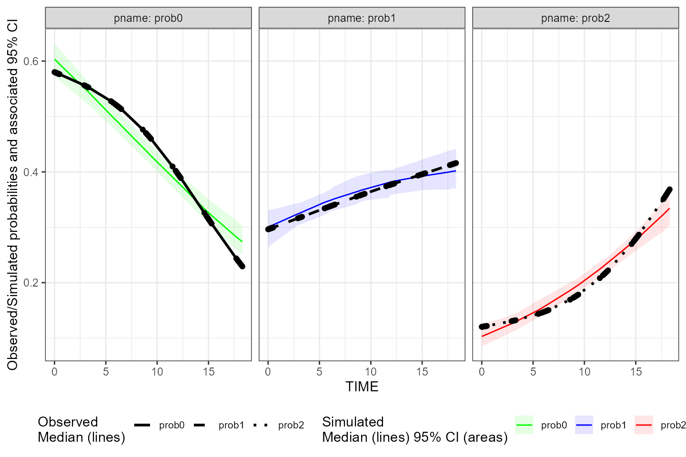
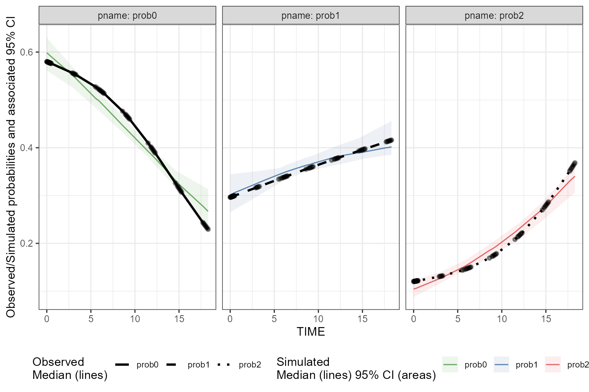
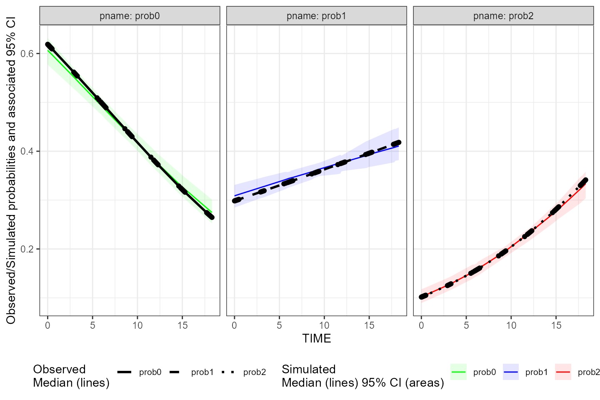
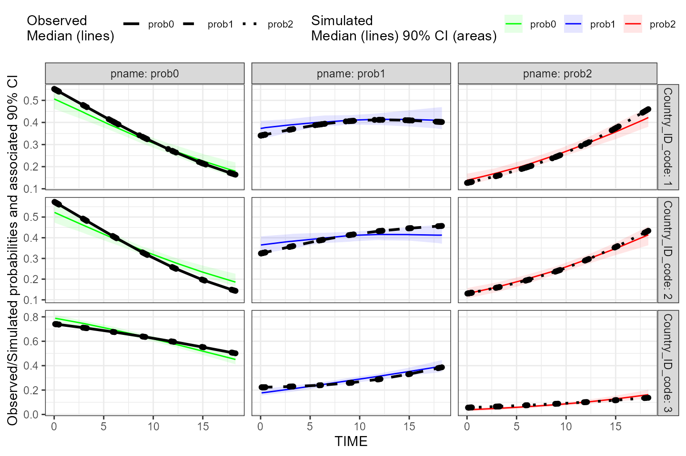
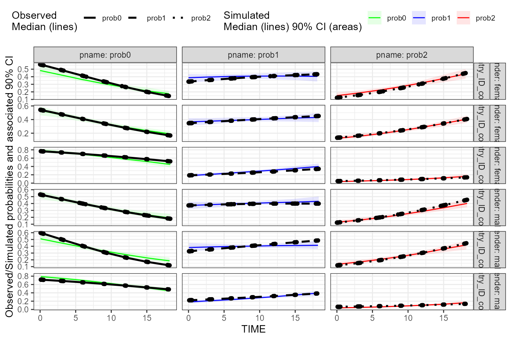

The tidyvpc package allows users to generate VPC for categorical data using both binning and binless methods.
The tidyvpc package has specific ordering requirements for the observed and simulated input datasets.
Observed data must be ordered by: Subject-ID, IVAR (Time)
Simulated data must be ordered by: Replicate, Subject-ID, IVAR (Time)
The example datasets we’ll use in this vignette are correctly ordered, but we will repeat this step for clarity.
obs_cat_data <- tidyvpc::obs_cat_data
sim_cat_data <- tidyvpc::sim_cat_data
obs_cat_data <- obs_cat_data[order(PID_code, agemonths)]
sim_cat_data <- sim_cat_data[order(Replicate, PID_code, IVAR)]All traditional binning methods are available to the user, see ?binning. Note, additional methods available in the classInt package can be provided in the bin argument.
The syntax for a continuous VPC and categorical VPC are nearly identical, except in vpcstats() function, specify vpc.type = "categorical"
In the example below, we’ll bin directly on our (rounded) x variable, agemonths.
vpc <- observed(obs_cat_data, x = agemonths, yobs = zlencat) %>%
simulated(sim_cat_data, ysim = DV) %>%
binning(bin = round(agemonths, 0)) %>%
vpcstats(vpc.type = "categorical")
plot(vpc, facet = TRUE, legend.position = "bottom", facet.scales = "fixed")
Let’s explore stratification and provide a different binning method in the below VPC. We can also change our confidence level and quantile type for the prediction intervals (shaded area) by specifying conf.level = .9 and quantile.type = 6.
Note: Phoenix uses quantile.type = 6 while tidyvpc uses quantile.type = 7 by default.
vpc <- observed(obs_cat_data, x = agemonths, yobs = zlencat) %>%
simulated(sim_cat_data, ysim = DV) %>%
stratify(~ Country_ID_code) %>%
binning(bin = "pam", nbins = 6) %>%
vpcstats(vpc.type = "categorical", conf.level = .9, quantile.type = 6)
plot(vpc, facet = TRUE, legend.position = "bottom", facet.scales = "fixed")
A binless approach was developed to fit categorical data using gam(family = "binomial"). Users can optimize smoothing parameter for the binless fit using binless(optimize = TRUE) (default), in which case, the optimized smoothing parameters for each category of DV in the observed data will be automatically defined by minimization of AIC.
sp using AIC
vpc <- observed(obs_cat_data, x = agemonths, yobs = zlencat) %>%
simulated(sim_cat_data, ysim = DV) %>%
binless(optimize = TRUE) %>%
vpcstats(vpc.type = "categorical", quantile.type = 6)
plot(vpc, facet = TRUE, legend.position = "bottom", facet.scales = "fixed")
We can increase the interval used to optimize value of smoothing parameters using the optimization.interval argument of the binless() function.
vpc <- observed(obs_cat_data, x = agemonths, yobs = zlencat) %>%
simulated(sim_cat_data, ysim = DV) %>%
stratify(~ Country_ID_code) %>%
binless(optimize = TRUE, optimization.interval = c(0,300)) %>%
vpcstats(vpc.type = "categorical")
plot(vpc, facet = TRUE, legend.position = "bottom", facet.scales = "fixed")
sp
Alternatively, users may supply their own smoothing parameters using the sp argument.
This method use gam with sp values specified for each level of categorical DV.
Note, sp argument must be a list of the same length/order corresponding to the unique values of our categorical DV. See additional details in next section if stratification specified
sp_user <- list(p0 = 300,
p1 = 50,
p2 = 100)
vpc <- observed(obs_cat_data, x = agemonths, yobs = zlencat) %>%
simulated(sim_cat_data, ysim = DV) %>%
binless(optimize = FALSE, sp = sp_user) %>%
vpcstats(vpc.type = "categorical", quantile.type = 6)
plot(vpc, facet = TRUE, legend.position = "bottom", facet.scales = "fixed")
sp for each strataIf supplying user supplied sp parameters with one or more stratification variables, the order of sp should be specified as unique combination of strata + DV, in ascending order.
sort(unique(obs_cat_data$Country_ID_code))
#> [1] 1 2 3
sort(unique(obs_cat_data$zlencat))
#> [1] 0 1 2
user_sp <- list(
Country1_prob0 = 100,
Country1_prob1 = 3,
Country1_prob2 = 4,
Country2_prob0 = 90,
Country2_prob1 = 3,
Country2_prob2 = 4,
Country3_prob0 = 55,
Country3_prob1 = 3,
Country3_prob2 = 200)Generate VPC
vpc <- observed(obs_cat_data, x = agemonths, yobs = zlencat) %>%
simulated(sim_cat_data, ysim = DV) %>%
stratify(~ Country_ID_code) %>%
binless(optimize = FALSE, sp = user_sp) %>%
vpcstats(vpc.type = "categorical"
, conf.level = 0.9
, quantile.type = 6
)
plot(vpc, facet = TRUE)
If supplying sp argument with one or more stratification variables, the order of elements in the list provided should be the following: strat1, strat2, …, DV.
Add dummy strat variable to obs_cat_data:
obs_cat_data <- obs_cat_data %>%
mutate(gender = ifelse(PID_code %% 2 == 1, "male", "female"))
vpc <- observed(obs_cat_data, x = agemonths, yobs = zlencat) %>%
simulated(sim_cat_data, ysim = DV) %>%
stratify(~ gender + Country_ID_code)View ordering of stratification variables and DV:
sort(unique(obs_cat_data$gender))
#> [1] "female" "male"
sort(unique(obs_cat_data$Country_ID_code))
#> [1] 1 2 3
sort(unique(obs_cat_data$zlencat))
#> [1] 0 1 2We first specified gender, then Country_ID_code in above formula, so our list of smoothing parameters provided to sp argument should be ordered as:
user_sp <- list(
female.1.prob0 = 1,
female.1.prob1 = 3,
female.1.prob2 = 9,
female.2.prob0 = 5,
female.2.prob1 = 10,
female.2.prob2 = 12,
female.3.prob0 = 33,
female.3.prob1 = 44,
female.3.prob2 = 88,
male.1.prob0 = 4,
male.1.prob1 = 12,
male.1.prob2 = 15,
male.2.prob0 = 800,
male.2.prob1 = 19,
male.2.prob2 = 28,
male.3.prob0 = 22,
male.3.prob1 = 88,
male.3.prob2 = 11
)Generate VPC
vpc <- observed(obs_cat_data, x = agemonths, yobs = zlencat) %>%
simulated(sim_cat_data, ysim = DV) %>%
stratify(~ gender + Country_ID_code) %>%
binless(optimize = FALSE, , sp = user_sp) %>%
vpcstats(vpc.type = "categorical"
, conf.level = 0.9
, quantile.type = 6
)
plot(vpc, facet=TRUE)